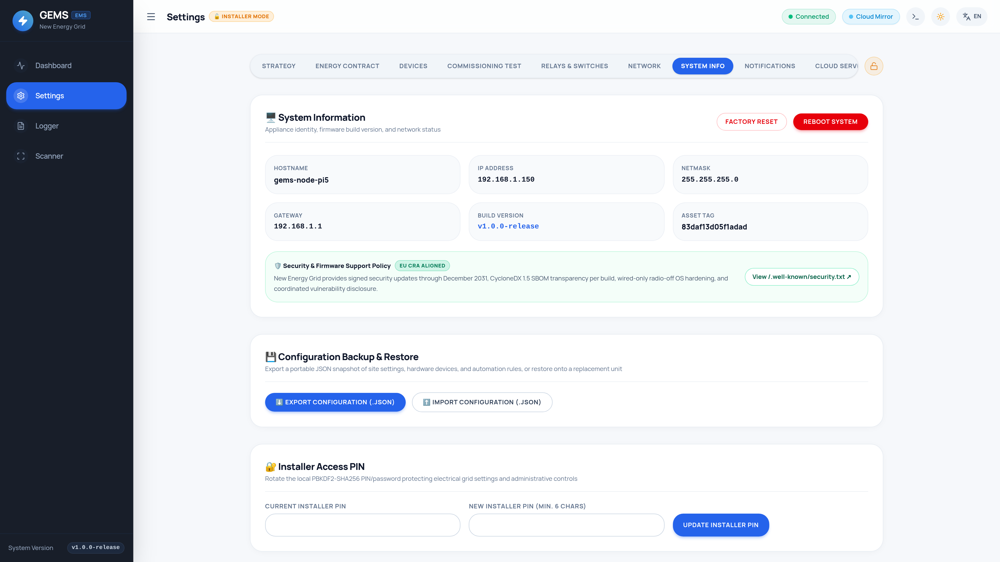

Manuel Installateur GEMS

- 1. Architecture Matérielle & Nomenclature (BOM)
- 2. Chargeur d'Amorçage NVMe & Flashage EEPROM
- 3. Déploiement OS & Gestion des Services Système
- 4. Accès à Distance (Cockpit, Kiosque, VNC, Nginx)
- 5. Découverte Sous-Réseau & Ports Série (Scanner)
- 6. Intégration d'Appareils & Les 170 Modèles
- 7. Raccordement Réseau, Limites par Phase & Schémas
- 8. Contrats d'Énergie & Les 5 Assistants Tarifaires
- 9. Stratégie d'Optimisation & Écrêtage Capacitaire Flandre
- 10. Protection des Certificats Verts Flamands (GSC)
- 11. Télécontrôle Fluvius (IEC 60870-5-104)
- 12. Arbitrage Batterie & Règles de Priorité
- 13. Recharge VE : Modbus TCP vs OCPP Natif
- 14. Relais Intelligents & Pompes à Chaleur SG-Ready
- 15. Alertes, Webhooks & Rapports PDF Automatisés
- 16. Diagnostics, Test de Mise en Service & Réception
1. Architecture Matérielle & Nomenclature (BOM)
GEMS est un contrôleur edge autonome et ultra-réactif conçu en Go (Golang) et Vue 3. Il fonctionne intégralement sur le réseau local du client sans dépendance cloud ni abonnement obligatoire. Afin d'éliminer définitivement l'usure prématurée des cartes MicroSD dans les coffrets électriques, GEMS s'exécute exclusivement sur un disque SSD M.2 NVMe avec base de données SQLite configurée en mode Write-Ahead Logging (WAL).
Nomenclature Matérielle de Référence (Bill of Materials)
| Composant | Spécification & Référence | Recommandations Terrain & Critères de Choix |
|---|---|---|
| Calculateur Monocarte Hôte | Raspberry Pi 5 (4 Go ou 8 Go RAM, Broadcom BCM2712 Quad-core Cortex-A76) | Pourquoi le Pi 5 : Dispose d'une interface PCIe 2.0 native à 16 broches. L'empreinte mémoire reste < 150 Mo de RAM avec 100 scrutations Modbus simultanées. 4 Go est idéal ; 8 Go offre une marge supplémentaire pour l'historique télémétrique local. |
| Disque SSD Interne | SSD PCIe NVMe M.2 2280 ou 2230/2242 de 128 Go à 512 Go (NAND TLC / 3D) | Pourquoi le NVMe : Offre plus de 450 Mo/s en écriture séquentielle et plus de 50 000 IOPS. Élimine toute usure flash liée à l'enregistrement haute fréquence des séries temporelles. N'utilisez jamais de carte MicroSD en production. |
| Carte d'Extension M.2 PCIe HAT | Raspberry Pi M.2 HAT+ officiel ou Pimoroni NVMe Base | Se monte directement au-dessus du connecteur GPIO 40 broches ou sous le Pi. Vérifiez que la nappe FPC 16 broches est bien alignée, contacts dorés orientés vers les pistes du connecteur. |
| Bloc d'Alimentation (PSU) | Alimentation officielle Raspberry Pi 27W USB-C PD (5,1 V / 5,0 A Power Delivery) | Critique : Les chargeurs téléphoniques standards de 15W provoquent des chutes de tension (brownouts) lors des appels de courant d'écriture du SSD NVMe. |
| Boîtier & Montage Rail DIN | Boîtier aluminium Armor avec ventilateur Active Cooler + clip rail DIN | Maintient la température du processeur sous 48 °C dans les tableaux électriques fermés (conformité RGIE / AREI). Le ventilateur Active Cooler est régulé dynamiquement en PWM par le noyau Linux. |
| Adaptateur Bus de Terrain Série | Adaptateur USB-vers-RS485 FTDI FT232R / FT232RL avec isolation galvanique 2,5 kV ou câble P1 | Requis pour Modbus RTU (Eastron, Carlo Gavazzi, Solis, RAEDIAN) ou la lecture directe du port RJ12 P1. L'isolation galvanique évite toute boucle de masse entre l'onduleur et le Raspberry Pi. |
2. Chargeur d'Amorçage NVMe & Flashage EEPROM
En sortie d'usine, les unités Raspberry Pi 5 démarrent uniquement sur carte MicroSD (ordre de démarrage 0xf41). Pour démarrer directement sur un SSD M.2 NVMe sans aucune carte MicroSD insérée, l'EEPROM du Raspberry Pi doit être mise à jour une seule fois.
- Insérez une carte MicroSD temporaire dans votre ordinateur portable.
- Ouvrez Raspberry Pi Imager → Choisissez le modèle (Choose Device) : Raspberry Pi 5.
- Choisissez le système (Choose OS) : Misc utility images → Bootloader → NVMe/PCIe Boot.
- Sélectionnez la carte MicroSD, cliquez sur Write, puis insérez la carte dans le Raspberry Pi 5.
- Mettez sous tension avec l'alimentation officielle 27W. En moins de 5 secondes, la LED verte ACT clignote rapidement et l'écran HDMI devient vert uni.
- Coupez l'alimentation et retirez la carte MicroSD. Le Pi 5 est désormais configuré de façon permanente sur
BOOT_ORDER=0xf461et démarrera automatiquement depuis le SSD NVMe !
Activer les Débits PCIe Gen 3.0 (Optimisation Atelier Optionnelle)
Par défaut, le Pi 5 pilote le bus PCIe en Gen 2.0 (500 Mo/s). Pour débloquer le mode PCIe Gen 3.0 (jusqu'à 850 Mo/s), éditez /boot/firmware/config.txt et ajoutez :
dtparam=pciex1
dtparam=pciex1_gen=3
3. Déploiement OS & Gestion des Services Système
Les installateurs peuvent déployer GEMS selon deux méthodes homologuées :
Comparaison des Méthodes de Déploiement
| Caractéristique | Méthode A : Image OS GEMS Précompilée (.img.xz) | Méthode B : Paquet Debian (.deb) sur OS Standard |
|---|---|---|
| Recommandé pour | Nouvelles installations matérielles clés en main | Systèmes Debian / Raspberry Pi OS existants |
| Écran Tactile Kiosque | Navigateur plein écran Wayfire Wayland préconfiguré | Configuration manuelle du navigateur requise |
| Proxy Inverse | Nginx préinstallé (Ports 80/443 → 8080) avec WebSockets | Backend direct standard sur le port 8080 |
| Console Web Distante | Cockpit préinstallé sur le port 9090 | Installable via apt install cockpit |
| Durée d'Installation | ~3 minutes (flashage direct du disque) | ~5 minutes (téléchargement et installation dpkg) |
Méthode B : Commandes d'Installation du Paquet Debian
TAG=$(curl -fsSL https://api.github.com/repos/webdotpulse/GRID-EMS-RELEASE/releases/latest | grep -o '"tag_name": *"[^"]*"' | cut -d'"' -f4)
curl -fLO "https://github.com/webdotpulse/GRID-EMS-RELEASE/releases/download/${TAG}/gems_${TAG#v}_arm64.deb"
# 2. Installer le paquet et ses dépendances (ex. sudo dpkg -i gems_9.47.3_arm64.deb)
sudo dpkg -i "gems_${TAG#v}_arm64.deb"
sudo apt-get install -f -y
# 3. Vérifier l'état des services système en arrière-plan
sudo systemctl status gems.service gems-updater.path
- Exécutable & Interface Web :
/opt/gems/gems-server&/opt/gems/dist/ - Stockage de la Configuration : 100 % piloté par l'interface graphique dans SQLite (aucun fichier texte manuel)
- Base de Données SQLite WAL :
/opt/gems/gems.db(accompagnée degems.db-wal) - Utilisateur Système : S'exécute sous le compte non privilégié
gemsmembre du groupedialout.
4. Accès à Distance, Cockpit & Affichage Kiosque
Une fois logé dans le tableau électrique, aucun clavier ni moniteur physique n'est requis. Le technicien accède à l'ensemble des outils de diagnostic et d'exploitation à distance :

| Interface d'Accès | URL / Point de Terminaison | Identifiants par Défaut | Usage Principal |
|---|---|---|---|
| Interface Web GEMS | https://ems.local (LAN) ou http://ems.local (Kiosque) |
Accès direct au Tableau de bord & modes VE ; Code PIN installateur pour Paramètres | Tableau de bord quotidien, configuration des appareils, contrats d'énergie et règles de stratégie. |
| GRID-EMS-SERVER (Cloud) | https://ems.newenergygrid.com |
Jeton d'appairage (Paramètres → Serveur Cloud) | Supervision multi-sites optionnelle, diagnostics clients à distance et accès mobile. |
| Console Web Cockpit | https://<ADRESSE-IP>:9090 |
Compte administrateur Linux provisionné | Terminal navigateur, santé SMART du SSD NVMe, diagnostics OS et redémarrage (modifier le mot de passe initial lors de la mise en service). |
| Raspberry Pi Connect | https://connect.raspberrypi.com |
Identifiant Raspberry Pi de l'installateur | Lien d'assistance sécurisé sans redirection de port (partage d'écran sans surveillance désactivé par défaut). |
4.1 Synchronisation Cloud Optionnelle (GRID-EMS-SERVER)
Les installateurs peuvent relier les unités clientes à la plateforme centrale GRID-EMS-SERVER (https://ems.newenergygrid.com).
GEMS repose sur une garantie d'architecture local-first. La connexion cloud est 100 % optionnelle : l'unité fonctionne en totale autonomie locale pour l'équilibrage dynamique de charge (DLB) à la seconde, le bridage d'onduleur, l'arbitrage batterie et le pilotage des relais sans aucune dépendance Internet. Lorsqu'elle est appairée, elle ajoute la supervision de flotte chiffrée et l'envoi de consignes à distance sans ouvrir de ports sur le routeur.
- Appairage Rapide : Ouvrez Paramètres → Serveur Cloud, saisissez le jeton d'appairage à 16 caractères et cliquez sur Appairer & Connecter. L'enregistrement s'effectue en moins de 15 secondes.
- Flux Sortant TLS 1.3 Uniquement : Le contrôleur initie des connexions HTTPS sortantes chiffrées. Aucune redirection de port entrante, IP fixe publique ni DDNS n'est nécessaire.
- Orchestration de Flotte à Distance : Les gestionnaires peuvent modifier à distance les modes stratégiques, ajuster le fonctionnement des batteries, moduler les courants de charge VE et lancer des diagnostics.
4.2 Autorité de Certification (CA) Locale & HTTPS Sans Avertissement (localhost, ems.local & Domaines Personnalisés)
Les navigateurs rejettent nativement les certificats auto-signés standards avec des alertes de sécurité (telles que NET::ERR_CERT_AUTHORITY_INVALID). Afin d'offrir une expérience fluide avec cadenas vert vérifié aux clients comme aux techniciens, GEMS intègre un moteur d'Autorité de Certification (CA) locale dédié.
GEMS renseigne automatiquement les noms alternatifs du sujet (SAN) pour toutes les adresses de bouclage (localhost, 127.0.0.1, ::1), les noms mDNS par défaut (ems.local, gems.local, *.ems.local, *.gems.local), les adresses IP locales actives et tout domaine personnalisé configuré (ex. myems.lan). Lors de l'ajout de domaines personnalisés, GEMS régénère et recharge le certificat à la volée sans aucune interruption de service.
| Opération | Méthode / Point d'Accès | Détails d'Exécution |
|---|---|---|
| Télécharger la CA Racine | http://<ip>:8080/api/ca.crt (ou /ca.crt) |
Téléchargez le certificat public Root CA directement sur le smartphone, la tablette ou l'ordinateur portable. |
| Configuration Auto Linux / NSS | ./scripts/setup-local-ca.sh [domaines...] |
Automatise la génération et l'enregistrement de la CA dans Chrome NSS (~/.pki/nssdb) et Firefox. |
| Domaines Personnalisés Web UI | Paramètres → Infos système → Autorité CA locale & Certificat SSL (Mode Installateur) | Déverrouillez le Mode Installateur Certifié, saisissez les domaines séparés par des virgules et cliquez sur Enregistrer & Régénérer le Certificat. |
5. Découverte Matérielle Sous-Réseau & Ports Série (Le Scanner)
Au lieu de chercher manuellement les adresses IP du routeur, les chemins série USB, les vitesses RS-485 en bauds ou les identifiants esclaves Modbus, utilisez l'outil intégré Scanner dans la barre latérale principale (accessible en Mode Installateur Certifié).

Découverte des Ports Série & du Bus RS-485
Un clic sur « Analyser les ports série » inspecte tous les câbles USB-P1 connectés, les adaptateurs USB-RS485 (chemins persistants /dev/serial/by-id/*) et les interfaces UART intégrées sans interrompre les scrutations déjà actives :
- Compteurs Intelligents P1 DSMR / e-MUCS : Écoute automatiquement les télégrammes des compteurs numériques à
115200 8N1et9600 7E1avec vérification du CRC-16. - Équipements Énergétiques RS-485 Modbus RTU : Détecte automatiquement les onduleurs raccordés (ex. Solis S5/S6 Hybrid), les bornes VE (ex. RAEDIAN NEO / NEX) et les compteurs modulaires sur rail DIN aux débits et parités standards, avec une option Balayage RS-485 avancé pour explorer des plages d'ID esclaves personnalisées (
1–247). - Configuration Série en Un Clic : Cliquer sur « + Configurer » en regard d'un appareil détecté ouvre Paramètres → Appareils et pré-remplit automatiquement la catégorie, le modèle vérifié, le port série persistant, l'ID esclave Modbus, le débit en bauds et la parité. Vous pouvez également cliquer sur « Détecter les appareils série » ou « Détection auto » directement dans le formulaire d'ajout.
Découverte Réseau Local (Sous-Réseau LAN)
Lorsque vous cliquez sur « Analyser le sous-réseau », GEMS exécute un balayage multi-étapes sur les 254 adresses hôtes du sous-réseau local /24 :
- Auto-identification du Contrôleur GEMS : GEMS reconnaît sa propre adresse IPv4 et son adresse MAC matérielle sur le réseau et affiche le badge
THIS GEMS CONTROLLER(New Energy Grid — GEMS Edge Energy Controller). - Balayage Multicast & Tables de Voisinage : Combine les tables ARP locales avec les diffusions mDNS et UPnP/SSDP pour résoudre les noms d'hôtes et descriptions d'équipements.
- Résolution IEEE OUI Multi-Masques (24, 28 et 36 bits) : Compare les adresses MAC aux registres énergétiques spécialisés et à la base complète IEEE MA-L / MA-M / MA-S (ex. Solis, RAEDIAN, SMA, Shelly).
- Empreinte Protocolaire & OEM : Sur les équipements dotés de modules Wi-Fi/Ethernet génériques, GEMS inspecte les ports énergétiques ouverts (
502/1502Modbus TCP & SunSpec Model 1 / Device ID,80/443/8080HTTP/TLS et8887OCPP) pour identifier le fabricant et le modèle exacts tout en préservant les clés Modbus TCP mono-socket.
6. Intégration d'Appareils & Les 170 Modèles Matériels
GEMS embarque une bibliothèque native de 170 modèles matériels couvrant les principales marques européennes d'onduleurs solaires, batteries, compteurs communicants, bornes VE, routeurs solaires linéaires, pompes à chaleur SG-Ready et relais intelligents. Toute la configuration s'effectue à 100 % depuis l'interface graphique sans éditer aucun fichier texte.


Procédure Pas-à-Pas d'Ajout d'un Appareil
- Accédez à Paramètres → Appareils.
- Cliquez sur « + Ajouter un appareil énergétique ».
- Choisissez la catégorie matérielle (Onduleurs & Solaire, Compteurs Intelligents, Bornes VE ou Relais Intelligents).
- Sélectionnez le modèle matériel approprié dans la liste déroulante.
- Renseignez les paramètres de communication selon les tableaux ci-dessous.
- Cliquez sur « Enregistrer ». Le moteur démarre immédiatement la lecture et passe le statut sur ● En ligne.
demo_meter, demo_solar, demo_battery, demo_charger, demo_relay) sont également sélectionnables dans chaque catégorie.
Catégorie A : Onduleurs Solaires & Hybrides (Modbus TCP / RTU)

| Nom du Champ | Type de Champ | Explication Installateur & Quand Choisir |
|---|---|---|
Nom de l'appareil |
Texte | Libellé explicite affiché sur le tableau de bord (ex. « Solis S6-EH3P10K Hybride »). |
Modèle matériel |
Liste déroulante |
Sélectionnez le fabricant (modèle de référence principal : Solis 5G/S6 Hybrid ; prend aussi en charge Huawei, SMA, Enerlution, Fronius, SolarEdge, Sungrow, GoodWe, Victron ou SunSpec générique). Les badges indiquent ✓ Vérifié, 1P↔3P ou Lecture seule.
|
IP Hôte / Port Série |
IPv4 ou /dev/serial/by-id/* |
Adresse IP locale de la clé Ethernet/LAN de l'onduleur (ex. 192.168.1.120) ou chemin série USB-RS485 persistant (/dev/serial/by-id/* à 9600/115200 bauds, parité 8N1). |
Port Modbus |
Entier | Le port Modbus TCP standard est 502 (ou 1502 / 8899 sur certaines passerelles spécialisées). |
ID Esclave Modbus |
Entier (1–247) | Identifiant d'unité sur le bus RS-485/TCP. Par défaut 1 sur Solis. Attribuez des ID uniques (1, 2, 3) lors du chaînage de plusieurs équipements sur un même bus RS-485. |
Puissance Nominale (kW) |
Décimal (kW) |
Crucial : Saisissez la puissance AC nominale de l'onduleur (ex. 10.0 pour un onduleur Solis 10 kW). GEMS utilise cette valeur pour calculer précisément les consignes de bridage actif en pourcentage.
|
Câblage des Phases |
Liste déroulante |
Associe l'ordre physique des phases : Auto, monophasé (L1, L2, L3) ou rotation triphasée (L1-L2-L3, L2-L3-L1, L3-L1-L2) pour une protection précise du disjoncteur principal par phase.
|
Autoriser le Bridage |
Case à cocher | Quand cocher : Lorsque le client dispose d'un contrat dynamique et que vous souhaitez que GEMS bride la production solaire lors des prix d'injection négatifs ou en mode zéro-injection. |
Compteur Réseau Raccordé ? |
Case à cocher | Quand cocher : Si l'onduleur hybride possède son propre compteur à tores CT câblé directement sur l'onduleur. Quand décocher : En l'absence de compteur dédié à l'onduleur — GEMS pilotera automatiquement l'autoconsommation de la batterie à partir du compteur communicant P1 central ! |
Batterie Raccordée ? & Capacité (kWh) |
Case + Décimal |
Quand cocher : Si une batterie de stockage couplée DC est reliée à l'onduleur hybride, et indiquez sa capacité utile en kWh (ex. 10.0 kWh) pour la modélisation prédictive solaire.
|
Intervalle de Scrutation (s) |
Entier (secondes) | 2 secondes par défaut pour une régulation réactive sans saturer les transmetteurs série ou TCP. |
Catégorie B : Compteurs Intelligents Réseau (Série P1, Ponts Wi-Fi & Modbus)

| Type de Connexion | Modèles Pris en Charge | Valeurs des Champs & Notes d'Installation |
|---|---|---|
| Câble Série P1 Direct | Fluvius / ORES / Resa / Sibelga / DSMR P1 Série (Belgique & Pays-Bas) |
Sélectionnez le chemin persistant /dev/serial/by-id/... (ou /dev/ttyUSB0). Débit : 115200 (DSMR 5.0.2 / e-MUCS v1.4) ou 9600 (DSMR 4.2). GEMS contrôle automatiquement la somme CRC de chaque télégramme.
|
| Dongle Wi-Fi P1 (REST/TCP) | HomeWizard P1 Meter, Passerelle P1 ESP8266/ESP32 |
Saisissez l'IP locale du dongle (ex. 192.168.1.121). Port 80 (API REST) ou Port 8234 (flux série TCP brut). Aucun câblage physique jusqu'au Raspberry Pi !
|
| Compteurs DIN Modbus RTU / TCP | Eastron SDM72D-M / SDM630 Triphasé, Carlo Gavazzi EM24, Schneider iEM3000, Shelly 3EM / Pro 3EM |
Modbus RTU : adaptateur USB-RS485 à 9600 bauds, 8N1, ID esclave 1. Modbus TCP : IP de la passerelle et port 502. Shelly Pro 3EM : IP de l'appareil et port 80.
|
| Sous-compteurs Production PV (Onduleurs Non Communicants) | Eastron SDM72D-M (eastron_sdm72_x96), Eastron SDM630 / SDM120 / SDM230, Carlo Gavazzi EM24, Shelly Pro 3EM |
Installez le compteur sur le disjoncteur AC d'un onduleur photovoltaïque existant sans port Modbus/LAN. Ajoutez-le via Onduleur / Solaire → Compteurs de Production PV (ou réglez Rôle de Mesure du Compteur sur Compteur de Production Solaire / PV). Attribuez un ID esclave RS-485 unique (ex. ID 2) ; le sens de câblage et la veille nocturne sont gérés automatiquement.
|
Catégorie C : Bornes de Recharge VE (Modbus TCP vs OCPP Natif)

Coexistence split-billing employeur : N'interfère PAS avec la connexion OCPP cloud de la borne (plateformes de facturation CPO externes ou services de remboursement employeur). Les deux fonctionnent simultanément !
Note RAEDIAN Gemini : Activez Load management with EMS dans l'interface WebConfig locale Gemini afin d'autoriser le pilotage Modbus TCP sur le port
502 (sinon la borne reste en télémétrie HTTPS lecture seule).
ws://<IP-GEMS>:8887/<ID> (ou ws://ems.local/ocpp/<ID>).
| Paramètre Borne VE & Flotte DLB | Options / Défaut | Explication Installateur & Quand Configurer |
|---|---|---|
Numéro d'Emplacement & Priorité |
Emplacement 1–64 • VIP, Haute, Normale, Basse, Solaire Seul |
Attribue le numéro de place et le rang strict dans la file Priority Queue (VIP > Haute > Normale > Basse > Solaire Seul) : Basse cède le pas aux bornes Normales lors des pointes tout en gardant l'accès au réseau/heures creuses, tandis que Solaire Seul se met en pause hors surplus photovoltaïque. |
Commutation Automatique 1P/3P Solaire |
Case à cocher (Désactivé / Activé) |
Active le basculement automatique entre Monophasé (1,4–3,6 kW) et Triphasé (4,1–22 kW) sur les bornes compatibles (telles que RAEDIAN NEO) avec une pause de sécurité hors charge obligatoire de 20 secondes protégeant les contacteurs du véhicule. |
DLB Flotte Actif & Auto-Enregistrement |
Interrupteurs (Bas de l'onglet Appareils) | Active l'équilibrage dynamique multi-bornes (jusqu'à 64 emplacements) et enregistre automatiquement toute borne OCPP 1.6-J entrante dès réception de sa trame BootNotification. |
Courant Max. Cluster (A) & Arbitrage |
ex. 63 A • priority_queue, equal_share, solar_first |
Définit la limite du départ divisionnaire alimentant le groupe de bornes et choisit le mode de répartition du courant disponible entre véhicules actifs. |
Proxy OCPP Smart Forwarder |
URL CPO Amont + En-tête Auth |
Transfère de manière transparente la facturation et les badges RFID OCPP vers une plateforme de facturation CPO externe (supporte la variable {chargePointId}) pendant que GEMS injecte localement les profils SetChargingProfile. |
7. Raccordement Réseau, Configuration Triphasée & Schémas
Accédez à Paramètres → Stratégie → Raccordement Réseau & Limites. Le paramétrage exact du calibre du disjoncteur principal (conformément au RGIE / AREI en Belgique ou à la norme NEN 1010 aux Pays-Bas) empêche toute disjonction générale et garantit un délestage dynamique fiable.

| Nom du Paramètre | Défaut / Plage | Explication Technique & Critères de Sélection |
|---|---|---|
Fuseau Horaire, Latitude & Longitude |
Europe/Brussels + Recherche d'adresse |
Saisissez l'adresse du site et cliquez sur Lookup Lat/Lon. Utilisé par le moteur météorologique Open-Meteo pour calculer l'irradiance solaire attendue le lendemain (W/m²) en vue de l'arbitrage batterie nocturne. |
Topologie du Réseau Électrique |
Liste déroulante |
Monophasé 230V : Raccordement résidentiel classique (Phase + Neutre, 230 V AC). Triphasé 400V (+N) : Réseau européen triphasé standard TN/TT (3x 400 V entre phases, 230 V entre phase et neutre). Triphasé 230V Triangle (Delta sans Neutre) : Réseau historique belge (Bruxelles, certaines zones de Wallonie et de Flandre). 3x 230 V entre phases SANS conducteur neutre (applique le calcul composé √3). |
Courant Nominal / Disjoncteur Principal (A) |
25,0 A (16 A – 250 A) |
Calibre nominal du disjoncteur principal de branchement (ex. 25A, 32A, 40A, 63A). Sert de base au calcul de la puissance maximale admissible du site.
|
Limite par Phase (A) |
25,0 A (16 A – 250 A) | Plafond de sécurité strict par phase individuelle. Si une charge domestique asymétrique (ex. taque à induction sur la phase L1) rapproche L1 de ce seuil, GEMS réduit instantanément le courant de la borne VE afin d'éviter le déclenchement du disjoncteur principal ! |
Prélèvement Réseau Autorisé (kW) |
Auto (ou kW manuel) |
Puissance active continue maximale autorisée en prélèvement depuis le réseau. Sur un raccordement 3x400V 25A, la valeur proposée est de 17,2 kW.
|
Injection Réseau Autorisée (kW) |
Auto (ou kW manuel) |
Puissance active continue maximale autorisée en injection vers le réseau public. Réglez sur 0,0 kW pour une conformité zéro-injection stricte (l'onduleur est bridé dynamiquement pour suivre la consommation exacte du bâtiment).
|
Courant de Repli si Compteur Hors Ligne |
0 A (Pause), 6 A, 8 A, 10 A, 16 A |
Consigne de sécurité appliquée aux bornes VE en cas de perte du signal du compteur P1/Modbus pendant plus de 30 secondes. Choisissez 0 A (Pause — Recommandé) sur les petits compteurs ou 6 A pour maintenir une charge minimale.
|
8. Contrats d'Énergie & Les 5 Assistants Tarifaires
Sous Paramètres → Contrat d'énergie, GEMS modélise le contrat de fourniture du client afin de calculer précisément les coûts nets de prélèvement, les revenus d'injection et les créneaux optimaux de charge batterie. Les prix horaires EPEX Spot Day-Ahead sont récupérés chaque jour à 13h00 CET.


Les 5 Assistants de Contrat : Quand Choisir Chacun ?
| Assistant | Type de Contrat Ciblé | Préréglages & Paramètres Pris en Charge | Quand le Sélectionner |
|---|---|---|---|
| Assistant A : Fixe / Variable |
Contrats classiques à tarif fixe ou variable mensuel |
- Prélèvement Heures Pleines (€/kWh) - Prélèvement Heures Creuses (€/kWh) - Tarif d'Injection Fixe (€/kWh) - Option NL Post-2027 fixed_feed_in_cost_kwh & plancher légal ≥ 50 %
|
Choisissez cette option hors contrat dynamique. Prend en charge les frais d'injection NL post-saldering et la grille wallonne CWaPE Tarif Impact.
|
| Assistant B : Dynamique Avancé |
Contrats dynamiques sur mesure avec éditeur visuel de formules |
- Flux d'enchères EPEX Spot associé - Blocs glisser-déposer ( Spot, Marge, Multiplicateur, GRD, TVA)- Règles horaires et par jour de la semaine |
Idéal pour les fournisseurs internationaux non répertoriés ou les contrats tertiaires/industriels exigeant des formules mathématiques personnalisées. |
| Assistant C : Dynamic-BE |
Contrats belges 15m / 60m indexés EPEX Spot Day-Ahead |
Fournisseurs préconfigurés : TotalEnergies Pixel Dynamic, Mega Smart/Cosy, Bolt Dynamisch, Engie Dynamic, Dats 24, Luminus, Eneco, Frank Energie, Ecopower, Octa+, Trevion, Aspiravi. Inclut le règlement 15m/60m, l'accise fédérale belge 2027 (0,0392 €/kWh) et le Tarif Impact CWaPE wallon (ECO/MEDIUM/PIC).
|
Choix par défaut pour les contrats dynamiques en Belgique. Sélectionnez le segment (Résidentiel 6 % vs Professionnel 21 % TVA), la région et la date de souscription. |
| Assistant D : Flex-BE |
Contrats belges variables mensuels à plages horaires (Time-of-Use) |
- Moyenne mensuelle EPEX Engie Flextime - Marges Heures Pleines, Creuses et Super-Creuses / Super-Dal (01:00–07:00) - Recharge nocturne automatisée de la batterie |
À sélectionner pour un contrat Engie Flextime. Active la pré-charge automatique de la batterie durant les heures nocturnes Super-Creuses fortement remisées. |
| Assistant E : Dynamic-NL |
Contrats dynamiques néerlandais 15m / 60m intégrant la fiscalité légale |
Fournisseurs NL préconfigurés : Vattenfall Nederland — FlexPrijs (marge 1,00× EPEX NL + 0,0211 €/kWh + redevance fixe 95,40 €/an Vastrecht), Eneco Dynamic, Frank Energie Dynamic et contrats EPEX NL personnalisés.Inclut les préréglages HTVA d'Energiebelasting (2026 : 0,09161 €/kWh / 2027 : 0,08802 €/kWh), 21 % de TVA, le règlement 15m/60m et les Terugleverkosten.
|
Standard pour les installations aux Pays-Bas. Modélise fidèlement l'Energiebelasting HTVA, les frais d'injection néerlandais (terugleverkosten) et l'isolation réglementaire stricte par pays. |
9. Stratégie d'Optimisation & Écrêtage Capacitaire Flandre
Accédez à Paramètres → Stratégie pour configurer le moteur central d'optimisation énergétique.

Les Trois Modes Stratégiques Principaux
Stocke 100 % du surplus solaire dans la batterie domestique et le véhicule électrique. Minimise le prélèvement réseau sans brider la puissance de pointe en kW.
Maintient la pointe quart-horaire glissante du Tarif Capacitaire (Capaciteitstarief) sous le plafond cible (2,50 kW par défaut) en déchargeant la batterie et en modulant la borne VE dès que les appareils ménagers dépassent la consigne.
Protège les fusibles principaux
3×25A phase par phase (évitant le surcoût réseau de plus de 1 000 €/an d'un passage en 3×35A), privilégie le stockage local et la charge VE face aux frais d'injection (terugleverkosten), bride lors des heures EPEX NL négatives et désactive intégralement les fonctions belges/flamandes (Capaciteitstarief, GSC, Elia, Super-Dal, IEC-104).
Paramètres du Tarif Capacitaire Flandre (Fluvius)
| Paramètre | Valeur Recommandée | Explication Installateur & Fonctionnement |
|---|---|---|
capacity_peak_limit_kw |
2,50 kW | Plafond mensuel de référence. En Flandre, Fluvius facture un forfait minimal légal de 2,50 kW quelle que soit la consommation. Maintenir les pointes quart-horaires à 2,50 kW ou moins garantit la facture réseau minimale. |
peak_shaving_buffer_w |
200 W | Marge de sécurité proactive retranchée au plafond (ex. 2,50 kW − 200 W = seuil d'action à 2,30 kW). Permet à l'EMS de réduire la charge VE et de solliciter la batterie avant que la moyenne sur 15 minutes du compteur numérique ne soit dépassée. |
peak_shaving_rampup_w |
150 W | Bande morte d'hystérésis requise sous le plafond avant de ré-accélérer une borne VE bridée. Évite les commutations répétées des relais de charge du véhicule. |
| Plafond Adaptatif Intelligent | Automatique (Activé) | Si une pointe domestique inévitable survient en cours de mois (ex. four + pompe à chaleur atteignant 4,2 kW pendant 15 minutes lorsque la batterie est vide), GEMS adapte dynamiquement son plafond opérationnel à 4,2 kW jusqu'à la fin du mois civil. Comme Fluvius facturera déjà ce pic de 4,2 kW, le client bénéficie d'une recharge VE plus rapide sans aucun centime de surcoût ! Le 1er du mois suivant, le plafond revient automatiquement à 2,50 kW. |
10. Bridage Actif d'Onduleur & Protection des Certificats Verts (GSC)
Avec les contrats dynamiques, les prix de gros européens deviennent parfois négatifs lors des après-midis ensoleillés de week-end. Injecter sur le réseau durant ces heures engendre une pénalité financière. Toutefois, les installations photovoltaïques historiques en Flandre bénéficient de subventions garanties sous forme de Certificats Verts (Groenestroomcertificaten — GSC).
Un gestionnaire basique coupe l'onduleur dès que le tarif d'injection passe sous 0,00 €/kWh. Or, si un client perçoit 250 €/certificat (0,250 €/kWh) en certificats verts flamands, arrêter l'onduleur lorsque le prix spot est de −0,05 €/kWh lui fait perdre +0,20 €/kWh de bénéfice net garanti !
Formule Mathématique de Compensation GSC
Exemple (GSC à 250 €) :
Seuil Effectif = 0,00 € - (250,0 € / 1000,0) = -0,250 €/kWh (-250,0 €/MWh)
| Préréglage GSC Flamand | Valeur de Subvention / kWh | Seuil Effectif de Bridage | Consigne pour l'Installateur |
|---|---|---|---|
| Aucun GSC (0 €) | 0,000 € / kWh | ≤ 0,0 €/MWh (0,000 €/kWh) | À choisir pour les installations postérieures à 2021 sans certificats verts. Bridage immédiat dès que le tarif d'injection passe sous zéro. |
| GSC 90 € | 0,090 € / kWh | ≤ -90,0 €/MWh (-0,090 €/kWh) | L'onduleur continue d'exporter par prix négatifs jusqu'à −0,090 €/kWh. Bridage uniquement sous −0,090 €/kWh. |
| GSC 250 € | 0,250 € / kWh | ≤ -250,0 €/MWh (-0,250 €/kWh) | Protège les installations PV flamandes de 2009–2012. Pleine production maintenue durant la quasi-totalité des heures négatives ! |
| GSC 350 € | 0,350 € / kWh | ≤ -350,0 €/MWh (-0,350 €/kWh) | Protège les installations historiques à haute valeur. Production maintenue jusqu'à −350 €/MWh. |
| GSC 450 € | 0,450 € / kWh | ≤ -450,0 €/MWh (-0,450 €/kWh) | Protège les premières installations PV flamandes (2006–2008). Revenu maximal de certificats garanti. |
11. Téléconduite GRD Belge (Fluvius / ORES / RESA — IEC 60870-5-104)
Pour les installations tertiaires, industrielles et de production décentralisée soumises aux prescriptions de téléconduite des gestionnaires de réseau belges (Synergrid C10/11 chez Fluvius, ORES et RESA), GEMS intègre nativement un serveur esclave IEC 60870-5-104 prenant en charge les ordres standards et horodatés CP56Time2a (ASDU 45/48/49/50 & 58/61/62/63), Select-Before-Execute, la désactivation (COT 8), l'écrêtage proportionnel multi-onduleurs de puissance active, le pilotage en boucle fermée de la puissance réactive (Q), la télémétrie cyclique/spontanée P/Q/U avec indicateurs de qualité QDS et le rechargement à chaud sans coupure TCP.
Paramètres de Configuration du Télécontrôle
| Paramètre | Valeur par Défaut | Description Technique |
|---|---|---|
iec104_enabled |
Désactivé | Interrupteur général du démon serveur de télécontrôle IEC 60870-5-104 (isolé aux installations belges). |
iec104_port |
2404 |
Port TCP normalisé par le standard international IEC 60870-5-104. |
iec104_common_address |
1 |
Adresse commune ASDU (1–65534 ; identifiant de poste attribué par Fluvius, ORES ou RESA). |
iec104_allowed_ip |
0.0.0.0 |
Liste blanche IP/CIDR matérielle. Renseignez l'adresse IP fixe ou le sous-réseau du coffret RTU GRD afin de rejeter toute connexion non autorisée. |
iec104_curtailment_mode |
kw |
Unité des consignes actives et réactives reçues : Puissance absolue (kw / kVAr) ou Pourcentage du nominal (percent). |
iec104_ioa_* |
5001–5003 / 1001–1003 |
Adressage IOA 24 bits personnalisé pour Consigne Active (5001), Découplage d'Urgence (5002), Consigne Réactive Q (5003) et télémétrie P/Q/U en direct (1001/1002/1003). |
Commandes de Simulation pour Essais de Réception Installateur
L'installateur peut valider la réponse d'urgence, l'écrêtage actif et le pilotage réactif de la centrale directement depuis l'interface GEMS sans attendre les signaux d'essai du GRD :
- 🚨 Découplage (ASDU 45) : Simule un ordre d'arrêt d'urgence. GEMS transmet instantanément une consigne 0 W à tous les onduleurs PV et interrompt la charge/décharge batterie.
- ✓ Réarmer Découplage : Rétablit le fonctionnement normal après un essai de découplage.
- 📉 Limite 4.0 kW (ASDU 50) : Injecte un plafond de puissance active de 4,0 kW réparti proportionnellement à la puissance nominale entre tous les onduleurs PV tout en bridant l'export batterie forcé.
- ⚡ Consigne +2.0 kVAr Q (ASDU 50) : Distribue une consigne réactive de +2,0 kVAr aux onduleurs compatibles Q (Solis, Huawei, Sungrow, SMA, Fronius, SolarEdge, KOSTAL, ABB/FIMER, Delta, KACO et Custom Modbus).
- Libérer Toutes Consignes : Restaure la production active et réactive nominale sans restriction.
Enveloppe de Flexibilité VPP / Agrégateur Externe (BRP/BSP)
Pour les sites rattachés à un agrégateur externe de flexibilité BRP/BSP agréé, l'installateur peut activer en option l'Enveloppe de Flexibilité VPP (BRP/BSP) sous Paramètres → Stratégie. Les consignes temporisées ±kW de charge, décharge et maintien (authentifiées par jeton Bearer via POST /api/vpp/dispatch local ou relais cloud GRID-EMS-SERVER avec bail deadman obligatoire de 15–900s) demeurent strictement bridées par les sécurités locales GEMS : disjoncteur principal par phase, priorité GRD IEC 60870-5-104 / §14a EnWG, bornes vpp_reserve_soc_pct & vpp_max_soc_pct, priorité d'échéance de départ VE, repli 0 W hors-ligne compteur et (en Flandre par défaut) protection de pointe quart-horaire Capaciteitstarief.
12. Arbitrage Batterie & Optimisation par Règles de Priorité
GEMS combine l'arbitrage automatique sur les prix spot et un moteur de règles déterministes sous Paramètres → Stratégie → Optimisation Batterie par Règles Tarifaires.

Paramètres d'Arbitrage & Protection Contre l'Usure Cellulaire
| Paramètre | Défaut / Plage | Explication Terrain & Arbitrages Techniques |
|---|---|---|
battery_grid_charge_strategy |
dynamic_forecast |
Prévision Dynamique 24h : Combine la prévision solaire (Open-Meteo), le profil de consommation adaptatif du site et les tarifs effectifs quart-horaires/horaires pour réserver l'énergie stockée aux pointes coûteuses, privilégier le surplus solaire gratuit et couvrir uniquement la demande locale sans injection réseau forcée. Seuil de Prix Uniquement : Charge dès que le prix est ≤ au plafond configuré. Super-Dal Uniquement : Charge exclusivement entre 01h00 et 07h00. Hybride : Combine la prévision solaire et les seuils de prix spot. |
force_charge_below_euro |
0,00 €/kWh (ex. 0,08) |
Plafond tarifaire sous lequel la batterie se recharge depuis le réseau (par défaut 0,00 €/kWh : charge réseau uniquement lors de prix négatifs). |
force_discharge_above_euro |
999,0 €/kWh (Désactivé) |
Plancher explicite de pointe tarifaire au-dessus duquel la batterie injecte vers le réseau. Conserver sur 999 pour couvrir uniquement la consommation locale sans injection forcée. |
min_battery_socmax_battery_soc |
Min : 10% (0–80%)Max : 100% (50–100%) |
Bornes configurables d'état de charge (min_battery_soc < max_battery_soc). La décharge s'arrête au plancher min_battery_soc pour préserver la réserve et la charge s'interrompt au plafond max_battery_soc afin de ménager les cellules. |
solar_forecast_enabled |
Activé (true) |
Active la prévision solaire Open-Meteo sur 24 heures (avec géométrie de toiture double orientation) et le maintien matinal de marge solaire (solar_hold) avant les prix négatifs de l'après-midi. |
battery_wear_cost_eur |
0,040 €/kWh (3–6 ct) | Protection Critique d'Usure : Chaque cycle sollicite les cellules lithium. GEMS exige que l'écart de prix (Prix de décharge − Prix de charge) dépasse ce coût d'usure avant d'exécuter un arbitrage réseau, évitant ainsi tout micro-cyclage non rentable ! |
winter_fallback_enabledwinter_fallback_trigger_socwinter_fallback_target_socwinter_fallback_cheapest_hours |
Activé Seuil : 25%Cible : 65%Créneau : 2 h |
Recharge Réseau de Repli Hiver / Faible Ensoleillement : Évite que la batterie reste immobilisée à son SoC minimal lors des semaines hivernales couvertes où l'écart tarifaire journalier est inférieur au seuil d'arbitrage complet. Lorsque le SoC descend ≤ 25% et que la prévision solaire 24h (ou la production des dernières 24h) ne suffit pas à la recharger, GEMS charge la batterie durant les 2 heures les moins chères de la journée jusqu'à 65% de SoC, tout en respectant strictement le plafond capacitaire flamand et le disjoncteur principal.
|
13. Pilotage de Charge VE & Boost Réseau Vert Belge Elia
GEMS coordonne directement les bornes de recharge VE connectées afin d'ajuster dynamiquement l'intensité de charge à chaque seconde :
| Mode de Charge | Plage de Courant | Fonctionnement & Usage Recommandé |
|---|---|---|
| ÉCO / Solaire Seul | 6 A à 16 A / 32 A (Dynamique) | Charge exclusivement à partir du surplus photovoltaïque. En cas de passage nuageux, la charge est automatiquement modulée ou suspendue pour éviter tout prélèvement coûteux sur le réseau. (Note : 6 A correspond au courant minimal normalisé selon l'IEC 61851 : 1,4 kW en monophasé ou 4,1 kW en triphasé). |
| RAPIDE (FAST / Immédiat) | 16 A ou 32 A (Max. Fixe) | Mobilise simultanément le solaire, la batterie et le réseau public jusqu'à la limite par phase du disjoncteur principal. À privilégier pour un départ imminent. |
| Dynamique Intelligent | Dynamique (Indexé Spot) | Planifie automatiquement la charge durant le nombre configuré d'Heures Spot les Moins Chères (1 à 8 heures) du contrat Day-Ahead. |
Boost de Synchronisation Réseau Vert Belge Elia
Lorsqu'elle est activée sous Paramètres → Stratégie, cette fonction récupère en direct par pas de 15 minutes la production renouvelable nationale auprès du gestionnaire belge de transport haute tension Elia. Dès que la part verte nationale (éolien + solaire) franchit le seuil choisi (ex. 65 %), la charge VE et la pré-charge batterie sont automatiquement stimulées pour aligner la consommation locale sur l'énergie verte réellement disponible !
14. Relais Intelligents & Pompes à Chaleur SG-Ready
GEMS pilote des relais intelligents (tels que Shelly Pro 2 ou Shelly Plus 1PM) afin d'automatiser les ballons d'eau chaude sanitaire, pompes de piscine et pompes à chaleur certifiées SG-Ready.


| Condition de Déclenchement | Seuil Configuré | Temporisation d'Hystérésis | Application Électrique Typique |
|---|---|---|---|
excess_solar |
Surplus > 1 200 W |
Durée ON min. : 10 min Durée OFF min. : 5 min |
Boost thermique de pompe à chaleur SG-Ready. Élève la consigne du ballon tampon grâce à l'énergie solaire gratuite en journée. |
negative_spot_price |
Prix ≤ 0,02 €/kWh |
Durée ON min. : 15 min | Résistance électrique d'appoint dans un chauffe-eau sanitaire. |
time_window |
13:00 à 16:00 chaque jour | Horaire fixe | Pompe de filtration de piscine programmée pendant le pic d'ensoleillement. |
Configurez systématiquement une Durée Minimale de Marche (Minimum ON Time) d'au moins 10 minutes pour les pompes à chaleur. Les cycles courts répétés (arrêts/redémarrages incessants lors de passages nuageux) risquent d'endommager le compresseur et d'annuler la garantie constructeur !
15. Alertes, Webhooks & Rapports PDF Automatisés
Configurez la supervision externe sous Paramètres → Notifications :

- Alertes Webhook : Collez une URL webhook Discord, Slack, Microsoft Teams ou Ntfy. GEMS expédie des alertes instantanées en cas d'échecs répétés de scrutation, d'approche de la limite du disjoncteur principal ou de perte de communication compteur.
- Rapport Énergétique Hebdomadaire par E-mail : Renseignez l'adresse e-mail du client et les paramètres SMTP. Chaque dimanche à 20h00, GEMS génère et envoie automatiquement une synthèse PDF présentant la production solaire, le taux d'autoconsommation (%) et les pointes de capacité.
16. Assistant de Mise en Service, Code PIN Installateur, Sécurité Réseau 60s, Mises à Jour Signées & Réception
Les contrôleurs commerciaux GEMS intègrent des mécanismes complets de mise en service et de sécurité terrain accessibles en Mode Installateur (déverrouillé via l'icône cadenas en haut à droite des Paramètres) :
- Assistant Initial Guidé & Séparation Mode Résident vs Mode Installateur Certifié : Se lance automatiquement au premier démarrage pour guider le choix de la langue/localisation (
NL,FR,EN), la création du Code PIN / mot de passe installateur local, le calibre du disjoncteur principal et le schéma électrique (RGIE / AREI / NEN 1010), la détection du compteur, l'ajout des équipements de référence (Solis & RAEDIAN) et le choix du contrat d'énergie. En usage quotidien (Mode Normal verrouillé), le particulier profite d'une interface épurée et sans risque — Tableau de bord en direct, choix du mode de charge VE, Appareils (avec sonde Debug en direct et envoi de rapport en un clic vers GRID-EMS-SERVER), Infos système (avec Mise à jour logicielle et Redémarrer le système confirmé) et le Journal en direct — tandis que le Scanner réseau, le raccourci Terminal Cockpit (:9090), les onglets Stratégie/Contrat/Relais/Réseau/Notifications/Cloud, l'ajout/modification/suppression d'appareils, la gestion Autorité CA locale & Certificat SSL, les sauvegardes et la réinitialisation d'usine restent masqués jusqu'au déverrouillage du Mode Installateur Certifié (protégé contre le forçage après 5 tentatives, avec rotation du PIN sous Paramètres → Infos système). - Adressage Série USB Persistant (
/dev/serial/by-id/*) & Ergonomie de la Page Appareils : L'utilisation de liens matériels persistants garantit que les adaptateurs USB-P1 et USB-RS485 ne permutent jamais de port après une coupure secteur. Dans Paramètres → Appareils, le module optionnel Cluster de Flotte VE & Dynamic Load Balancing (DLB) est placé proprement en bas de page sous les cartes d'appareils individuels. - Configuration Réseau Ethernet avec Annulation Automatique après 60 Secondes : Attribuez une adresse DHCP ou IPv4 statique exclusivement sur l'interface Ethernet filaire (
eth0) sous Paramètres → Réseau (le Wi-Fi est volontairement omis pour garantir une fiabilité industrielle dans les armoires métalliques). Sans confirmation dans les 60 secondes, GEMS rétablit automatiquement le profil NetworkManager fonctionnel précédent. - Suite Interactive de Test de Mise en Service & Pilotage Matériel (Local & Cloud) : Sous Paramètres → Test de Mise en Service (ainsi qu'à distance dans les Diagnostics GRID-EMS-SERVER), l'installateur exécute une vérification automatisée en 5 étapes couvrant l'Onduleur (ex. télémétrie en direct Solis + consigne de bridage actif à 80 % avec relecture), la Batterie (état de charge BMS + cycle maintenu de 2 minutes de charge active et 2 minutes de décharge active avec relecture BMS en direct) et la Borne VE (ex. télémétrie RAEDIAN + modulation dynamique à 6,0 A), suspendant temporairement la stratégie autonome avant de la restaurer automatiquement en toute sécurité à la fin du test. Les anomalies détectées proposent un bouton direct Corriger & Re-tester ainsi que le téléchargement d'un Certificat de Mise en Service PDF au format A4.
- Mises à Jour Signées Cryptographiquement, Sauvegarde JSON & Watchdog Matériel : Les mises à jour OTA en ligne comme les paquets
.debtéléversés manuellement sont vérifiés par signature cryptographique Ed25519 New Energy Grid et empreinte SHA-256 avant installation. Exportez des sauvegardes JSON complètes du site avant tout remplacement matériel, exécutez des réinitialisations d'usine sécurisées et bénéficiez de la surveillance combinéesystemdWatchdogSec=30et watchdog matériel Raspberry Pi.


Liste de Contrôle et de Réception sur Site (Checklist de Mise en Service)
| Statut | Point de Contrôle | Procédure de Vérification |
|---|---|---|
| [ ] | Matériel & Refroidissement | Ventilateur actif du Raspberry Pi 5 fonctionnel, démarrage NVMe confirmé, température < 50 °C dans Cockpit. |
| [ ] | Lecture du Compteur Réseau | Compteur série P1 ou Modbus en ligne. La puissance de prélèvement/injection correspond à l'affichage du compteur communicant. |
| [ ] | Télémétrie Onduleur | Communication Modbus TCP/RTU stable. Puissance solaire (W) et SoC batterie (%) correctement affichés sur le Tableau de bord. |
| [ ] | Consigne Borne VE | Connectée en Modbus TCP/RTU (ou OCPP). Basculement fluide et réactif entre les modes Éco et Rapide. |
| [ ] | Limites Réseau Configurées | Courant nominal et limites par phase réglés conformément au calibre du disjoncteur principal du client (RGIE / AREI). |
| [ ] | Plafond Capacitaire Flandre | Si installation en Flandre : plafond de pointe réglé (2,50 kW par défaut) et marge tampon sur 200 W. |
| [ ] | Protection Certificats Verts | Si le client perçoit des GSC flamands : valeur exacte du certificat (90 €, 250 €, 350 €, 450 €) enregistrée. |
| [ ] | Contrat & Tarifs | Préréglage fournisseur et GRD sélectionnés. Le visualiseur 24h affiche bien la courbe des prix spot du jour. |
| [ ] | Géométrie PV & Modbus Personnalisé | Inclinaison/azimut de toiture (et chaîne MPPT 2 optionnelle sur Solis) renseignés ; tout profil Modbus personnalisé validé via Lire / Tester Registre. |
| [ ] | SG-Ready 4 États & Bus Local Lecture Seule | Le cas échéant : liaison double relais SG-Ready 4 états (garde compresseur 600 s) et MQTT sortant / Modbus TCP LAN lecture seule (port 1502) vérifiés. |
| [ ] | Vérification du Journal | Onglet Journal inspecté : aucune erreur de communication répétitive ni expiration de délai (timeout) Modbus. |